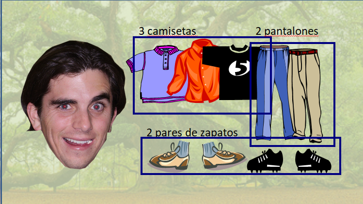
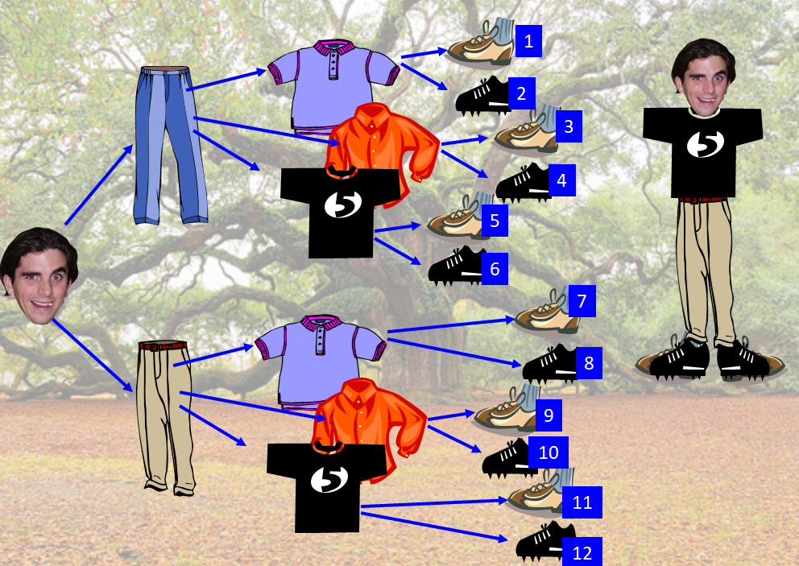
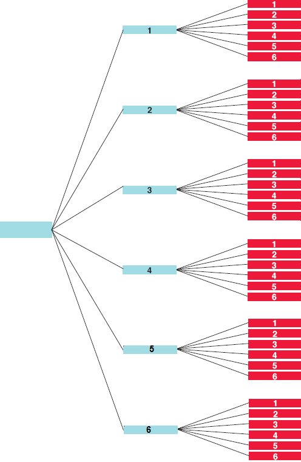

Muchos problemas de Teoría de la Probabilidad requieren que contemos el número de maneras que un suceso en particular puede ocurrir o el número de sucesos en el espacio muestral. Para ello existen las técnicas de recuento. Una de las principales es el diagrama de árbol.
Por ejemplo: Olegario tiene en su armario 3 camisetas, 2 pantalones y dos pares de zapatos. ¿De cuántas maneras diferentes se puede vestir cada mañana?


Se puede vestir de 12 maneras diferentes.
Ejercicio. Representa el diagrama de árbol de tirar dos dados.
Solución:
